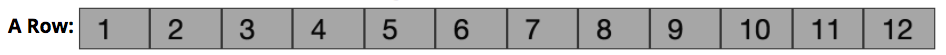

Chapter 9 CSS Frameworks
The previous chapters have covered how to use CSS to make your page both stylish and responsive. While it is certain possible to implement an entire site by creating your own CSS rules, that can quickly get tedious: often you’d like a page to have a “standard” set of rules (because the browser’s style-less appearance) and then customize those rules to your liking.
For this reason, most professional web developers utilize an existing CSS Framework instead. A CSS Framework is a stylesheet (a .css file!) that contains a large list of pre-defined rules that you can apply to your page. CSS frameworks provide a number of benefits:
- Applies attractive default styling to all HTML elements: CSS frameworks make your pages instantly look better through a bunch of element selector rules. Frameworks provide pleasant default fonts, line spacing, spacing, and link styling without any extra effort on your part.
- Provides style classes for common UI components: framework stylesheets will also include CSS classes you can add to your markup to easily include badges, in-page tabs, drop-down buttons, multi-column layouts, and more. Frameworks enable you to add style your page by specifying CSS classes, rather than needing to define multiple CSS rules for a single effect.
CSS frameworks are thus designed to make your life easier and your development more efficient—while still enabling you to provide your own customizations and styling with all of the power of CSS.
There are many different CSS frameworks to choose from. Some popular ones include:
Bootstrap is the most commonly used CSS framework on the web. Sometimes called “Twitter Bootstrap”, it was originally created at Twitter to enforce some consistency among their internal tools, but was released as an open-source project in 2011. Its popularity has benefits and drawbacks: it’s very well tested, documented, and supported, but it’s also so prevalent that it’s default look has become cliché.
The latest release of Bootstrap, v4 was released in 2017. This version includes an update look and feel, and makes it relatively easy to create your own customized version. Bootstrap 4 also uses Flexbox as a foundation for its grid system, offering some better performance. For this and other reasons, Bootstrap 4 does not support IE 9 or earlier browsers. For older browsers, you’d want to use Bootstrap 3.
This text discusses Bootstrap 4 as an example. Be careful that you are looking at information about the right version if you seek out documentation or help online!
Foundation is Bootstrap’s chief rival, and has a reputation for being more ahead-of-the-curve than Bootstrap (introducing new features sooner). For example, it was the first framework to use a responsive mobile-first design, and provided a Flexbox-based grid long before Bootstrap. Foundation has most of the same UI elements as Bootstrap, but with a different look and feel (that can be customized through a web-based tool).
Material Components for the Web (MCW) is an official implementation of Google’s Material Design visual language. This is the look-and-feel found in most Google products and Android applications. Material Design is very opinionated so MCW is very difficult to customize. The MCW style class names are also very verbose, as they follow the Block, Element, Modifier (BEM) naming scheme.
Materialize is the other popular Material Design implementation. This is an open-source project, so it is not provided nor supported by Google. However, it is structurally similar to Bootstrap, making it easy to learn and popular among people who know that framework.
normalize.css is not so much a full framework as a small utility that performs browser normalization (also called a “reset”).
normalize.cssstandardizes the quirks across browsers and making it so that the same HTML and CSS is displayed more consistently and without errors. Note that most other frameworks include some version of this package (for example, Bootstrap contains a fork called Reboot).If you choose not to use a framework, you should still include
normalizeto make your sites consistent!
Other frameworks exist as well, each with its own benefits and drawbacks (e.g., Skeleton is designed to be as lightweight as possible, but at the cost of features).
9.1 Using a Framework
The important thing to realize is that a CSS framework is just a stylesheet with a bunch of rules that someone else wrote for you. There’s nothing magic about them. You can look at the stylesheet and see all the rules that have been defined, and it’s all stuff you could have written yourself (though some of it can be quite complex). But those rules have been crafted by professionals and tested on a wide array of browsers to ensure consistent results, so it’s a good idea to build on top of them rather than trying to re-invent the wheel.
For example, you can view the normalize.css file at https://necolas.github.io/normalize.css/7.0.0/normalize.css and see that it looks exactly like the CSS you might write on your own!
Including a Framework
Because a CSS framework is just a CSS file, you include one in your page using a <link> element just like with any other stylesheet:
<head>
<!--... other elements here...-->
<link rel="stylesheet"
href="https://maxcdn.bootstrapcdn.com/bootstrap/4.1.0/css/bootstrap.css">
<link rel="stylesheet" href="css/my-style.css">
</head>Important! Note that you link the CSS framework before you link your own stylesheet. Remember that CSS is read top-to-bottom, and that the last rule on the page wins. By putting your stylesheet second, any rules you define will override the rules specified in the framework, thereby allowing you to continue to customize the appearance.
For example,
bootstrap.cssgives the<body>a color of#212529(very dark gray); you may instead want to have a different default text color::/* my-style.css */ body { color: blue; }If you included your stylesheet first in the
<head>, then your rule would be applied initially but would be overridden by thebootstrap.cssfile, causing your rule to seem to have no effect! Thus you should always put your own custom CSS as the last<link>in the page, after any CSS frameworks.
It is most common to include the minified versions of CSS frameworks: these are usually named as .min.css files (e.g., bootstrap.min.css). A minified file is one that has extra comments and white space removed, creating a file with a much smaller size (remember that each space and line break is a character so takes up a byte! Bootstrap goes from 160 kilobytes to about 127 kilobytes when minimized). Because web pages have to be downloaded, smaller pages will be downloaded faster, and thus will be “quicker” for the user. While an unminimized CSS file won’t “break the bank”, the extra white space doesn’t provide anything that you need.
- You can almost always switch between the minimized and non-minimized file just by changing the file name between
file.cssandfile.min.css(when using a CDN).
There are a few different ways of accessing a CSS framework’s stylesheet in order to link it into your page:
Linking to a CDN
The easiest option is usually to link to a Content Delivery Network (CDN), which is a web service intended to quickly serve files commonly used by multiple websites. To do this, you simply provide the URL for the file on the CDN’s servers as the href of your link (as in the example above).
CDNJS is a CDN for packages and libraries operated by Cloudflare, and is a good place to start if you’re unsure of the CDN link for a packages. Other packages may have different CDN hosting (e.g., Bootstrap recommends a link from its own BootstrapCDN).
In addition to being simple, CDNs also provide a distinct speed benefit: CDNs replicate their content to machines in several regions of the world, and use dynamic Domain Name Service (DNS) resolution to steer users to the machine nearest them. So a user in Australia might download the Bootstrap CSS from a server located in Singapore, while a user in France might get the same CSS file from a server located in Ireland. This helps increase the speed that the files are downloaded.
Additionally, CDNs allow a site to take advantage of browser caching: browsers will save previously downloaded versions of a file to avoid downloading it again. If multiple sites all use the CDN version of Bootstrap, then the browser only has to download that file the first time you visit one of those sites. With popular frameworks like Bootstrap, it’s highly likely that your user has already visited a site that links to Bootstrap’s CDN version, and thus the Bootstrap files are already in the user’s browser cache.
Finally, CDNs allow the frameworks to be accessed as a service, meaning that developers may be able to quickly patch bugs (if the fix doesn’t break existing code) without the developer having to do anything. (This feature can also be seen as a drawback, as you need to trust the library developer not to break anything or accidentally include malicious code).
The only real disadvantage to linking to a CDN is that it won’t work when you are offline. If you commonly do your development offline, or if you are building a web application that is meant to run offline, you’ll need to utilize a different method.
Downloading the Source
If you can’t link to a CDN, you’ll need to download the source file directly to your computer and saving it as a source code file in your project (often in a lib/ folder). These files can be found on the framework’s website, or often in their GitHub repo (look for the .css file, or for a dist/ distribution folder).
In addition to being available offline, downloading CSS files directly provides a few other advantages:
- Frameworks may allow you to customize their content even before you include the file: selecting only the components you need, and adjusting base styling properties before downloading your customized source file.
- If you use a CSS pre-compiler such as SASS, you can often modify the source-code mix-ins to more easily provide your own customizations and override the default fonts, colors, sizes, etc. simply by changing some variables.
- If you use a build system such as gulp or webpack, then you can often combine all of your CSS files into a single file. This reduces the total number of files that need to be downloaded, which can increase the page load speed—especially on slower mobile networks.
Note that it is also possible to utilize a package manager such as npm to download and manage the source for frameworks. This has the advantage of enabling you to avoid adding large extraneous source files to your code repo, as well as managing any dependencies for those libraries.
Recall that you can install a package using npm, saving the dependency into your project’s package.json file:
# install bootstrap
npm install --save bootstrap@4(This explicitly loads Bootstrap 4. See below for details).
This will install the library’s source code into your project’s node_modules/ folder. You will then need to dig around inside that source folder for the .css file you wish to link (it is in no way consistent for all frameworks)
<!-- notice the RELATIVE path to the file -->
<link rel="stylesheet" href="node_modules/bootstrap/dist/css/bootstrap.min.css">Because you’ve saved the dependency in your package.json file, you can use the .gitignore file to exclude the node_modules/ folder from your code repo, having new developers install the required framework via npm install. You can also use npm to easily upgrade the packages (such as when Bootstrap 4 leaves beta).
Important: if you are publishing a site to GitHub Pages, you must add the node_modules folders to your code repo so that it will get uploaded to GitHub and the file will be present on the server! For this reason, I recommend just using a CDN when working with GitHub Pages.
9.2 Bootstrap
This section discusses some of the features and uses of the Bootstrap CSS framework. Note that many other frameworks are used in a similar fashion (though the specific classes and components may be different).
You include the Bootstrap framework by linking its .css file to your page (whether from a CDN or a local file). You can get the link for the latest version from the Bootstrap Home Page.
<link rel="stylesheet"
href="https://stackpath.bootstrapcdn.com/bootstrap/4.1.0/css/bootstrap.min.css"
integrity="sha384-9gVQ4dYFwwWSjIDZnLEWnxCjeSWFphJiwGPXr1jddIhOegiu1FwO5qRGvFXOdJZ4"
crossorigin="anonymous">(This <link> example has 2 additional (optional) attributes: integrity gives a cryptographic hash of the source code so the browser can make sure you didn’t download a malicious file by mistake, and crossorigin which says that no credentials are sent to the remote server—see the AJAX chapter for a more detailed discussion).
When you first include the Bootstrap framework, you’ll immediately see the effects (usually for the better!): the default font has changed, margins are different, and so forth. The Bootstrap CSS file contains a number of rules that apply to elements without an extra work, including the <body> and headers. See the documentation for details about the default styling (as well as the entire “Content” section of the documentation).
Utility Classes
In addition to the base styling rules, Bootstrap also includes a huge number of rules that can be applied to elements by giving them a particular CSS class. These utility classes are what gives Bootstrap its power and flexibility.
For example, Bootstrap provides text utilities that allow you to style text just by giving it a CSS class, rather than needing to write a new rule for that element. This example shows the text-justify utility, which justifies the text (i.e., the letter- and word-spacing is adjusted so that the text falls flush with both margins):
The text-justify utility class will justify a block of text. Example from the Bootstrap documentation.
While it would be possible to write such a rule yourself, Bootstrap provides these classes as “built-in”, so you can focus on the semantics of the content rather than the CSS.
Many elements need to be given an additional utility class to indicate that they should use Bootstrap styling. For example, in order to give a <button> a Bootstrap style, it needs to have the class btn. This allows you to utilize Bootstrap’s styling, but to not be forced to “override” that look and feel if you want to do something different.
<button>Plain button</button>
<button class="btn">Bootstrap button</button>
<button class="btn btn-primary">Primary colored button</button>Bootstrap Button classes.
The last button in this example has an additional utility class btn-primary that specifies which color style it should use. Bootstrap provides a number of pre-defined color styles, named after semantic meaning (e.g., primary or warning):

Bootstrap Button colors.
These same color classes can be applied to text elements (e.g., text-primary), element backgrounds (e.g., bg-primary), alert blocks (e.g., alert-warning), and more. Modifying the SASS source code for Bootstrap will allow you to easily customize these colors while keeping the theme consistent.
Note that you can even use the btn class to style other elements (e.g., <a> links) so that they look like buttons!
<a class="btn btn-primary" href="#">A link</a>“Stacking” utility classes like this is quite common in Bootstrap; it is not unusual for an element to have 4 or 5 different utility classes to fully specify its appearance.
Bootstrap is filled with utility classes, both for generic styling (e.g., borders or position), and for specific types of content (e.g., lists, tables, forms). Check out the documentation and examples for details on how to style particular elements and achieve specific effects.
Bootstrap also includes utility classes specifically to support screen readers. For example, the sr-only class can be used to style an element so it is only perceivable to screen readers.
Utility classes do not mean you never have to write any CSS rules! While Bootstrap provides classes to handle lots of “common” styling, you’ll almost always need to add your own customizations on top of it to produce the appearance you want.
Responsive Design
A major feature of Bootstrap (and other CSS frameworks) is the ability to support mobile-first, responsive webpages. Many Bootstrap utility classes use media queries to cause them to respond to the device’s screen size.
Bootstrap’s responsive utilities utilize a predefined set of responsive breakpoints: screen widths that mark the “boundaries” between different size devices.
| Screen Width | Abbreviation | Approximate Device Size |
|---|---|---|
| < 576px | (default) | Extra-small devices (portrait phones) |
| ≥ 576px | sm |
Small devices (landscape phones) |
| ≥ 768px | md |
Medium devices (tablets) |
| ≥ 992px | lg |
Large devices (desktops) |
| ≥ 1200px | xl |
Extra-large devices (large desktops) |
All of these size specifications are “greater than or equal”, following a mobile first approach. Thus a responsive utility that applies to a medium (md) screen will also apply to large (lg) and extra-large (xl) screens.
Responsive utilities are named with the size’s abbreviation to specify what screen size that utility should apply on. For example, the float-left class will cause an element to float to the left on any sized screen (it has no size specification). On the other hand, the float-md-left class will cause the element to float only on medium or larger screens. Similarly, the float-lg-left class would cause the element to float only on large or larger screens. This would allow you to have an image that floats to the side on a bigger screen, but is flowed with the rest of the content when there isn’t enough room.
- The breakpoint abbreviations are consistent across Bootstrap (and even shared by other frameworks such as Materialize), and usually comes after the name of property to change but before the value to give it. For example, the
d-noneclass gives an element adisplay:noneon all devices, whiled-sm-nonewould apply on small or larger screens.
Many (but not all!) Bootstrap classes support responsive breakpoints. The most common class to do this is the container class. Containers are the most basic layout element in Bootstrap, and are required for doing more complex layouts (such as Grids, below). The container class gives the element a fixed width that includes some padding on the sides, so that the content isn’t right up against the edge of the window. If the size of the window shrinks to the point where the padding would disappear, the container responsively changes size so that there remains padding even on the smaller screen!
See this Code Pen for an example. If you slowly resize the browser, you’ll see the text “jump” to a smaller width as you pass each responsive breakpoint.
.containerelements are usually direct children of the<body>(e.g.,<header>,<main>). However, if you want a background color or image to “full bleed” to the edges of the viewport, you can put the.containerinside the another element that is styled with the background, as in the CodePen example.Bootstrap also provides an alternate
container-fluidclass that always has the same amount of padding around the content, with the content “reflowing” based on the browser size.
In general, every page you style with Bootstrap will have a Container (usually a .container) to hold the content.
The Grid
After Containers, most common use of the responsive utility classes in CSS frameworks such as Bootstrap is to provide a grid layout, similar to the multi-column layouts created with Flexbox in the previous chapters. The Bootstrap Grid system allows you to specify these kinds of complex, responsive layouts without needing to implement your own Flexbox containers and items.
You specify that a set of elements should be part of a “grid” by putting them inside a .row element (the row class ensures that the elements are lined up). A .row acts a lot like a “flex-container” (and in fact does have display:flex), where each of its children will be “flex items”. Note that the .row must be a direct child of a Container (container or container-fluid); this ensures that grid will be positioned and spaced within its parent correctly.
<div class="container"> <!-- container for the grid -->
<div class="row"> <!-- a row of items -->
<div class="col-6">Item 1</div>
<div class="col-4">Item 2</div>
<div class="col">Item 3</div>
</div>
</div>You specify how wide each item in the .row is by specifying the number of “columns” it spans. Think of the grid as containing 12 “slots”:

Each item in the grid is given a class that indicates how many of these slots it takes up (similar to merging cells in a spreadsheet):

These classes are named in the format col-#, where the # is how many column slots it should take. For example a .col-4 will take up 4 columns, while a .col-6 will take up 6 columns. A class of just col will take up an equal share of the remaining columns (similar to what happens with the flex-grow property!)
Thus the above HTML will produce elements with the following layout:
- Notice that “Item 1” takes up half (6/12) of the grid, “Item 2” takes up a third (4/12), and “Item 3” takes up the remainder (2/12).
You can also make this grid layout responsive by using responsive utility versions of the col-# classes. For example, a .col-md-4 would take up 4 columns only on medium or larger screens, while a .col-lg-6 would take up 6 columns only on large or larger screens. Note that a child of the .row that doesn’t have a column size will effectively act as its own row (on its own line).
Finally, note that you can specify multiple responsive utilities on each grid item! For example, you can specify that items should take up 6 columns on small or larger screens (col-6-sm), only but 3 columns on medium or larger screens (col-3-sm):
<div class="container">
<div class="row">
<div class="col-sm-6 col-md-3">Item 1</div>
<div class="col-sm-6 col-md-3">Item 2</div>
<div class="col-sm-6 col-md-3">Item 3</div>
<div class="col-sm-6 col-md-3">Item 4</div>
</div>
</div>(See a CodePen of this code in action!)
The ordering of Bootstrap’s CSS means that the col-sm-6 class will get overridden by the col-md-3 class (since md is a more specific size than sm), so you can specify both classes and the correct one will apply—the order of the class names in the element doesn’t matter. Note that the “or larger” part of the responsive breakpoint definition also means that you don’t need to specify a column width for each different breakpoint, only for the smallest level at which the utility should apply (e.g., we don’t need col-lg- since it isn’t different than col-md-).
Bootstrap includes a number of utilities that can be used to customize how grids of content are displayed, including all of the features of Flexbox. For more details and options, see the Grid documentation.
Components
In addition to its basic and responsive utilities, Bootstrap provides a number of CSS classes that let you easily create more complex components or widgets: alerts, cards, navbars, collapsible boxes, image carousels, pop-up modals, and more. Each of these components is discussed in the documentation, and has its own particular element structure and CSS classes you need to use.
For example, you can create a card (a styled content container) by creating an element with the card class and card-body child. You can then include other nested elements with classes such as card-img-top, card-title, or card-text to produce further styled effects:
<div class="card"> <!-- the card -->
<img class="card-img-top" src="..." alt="image at top of card image">
<div class="card-body"> <!-- the "body" of the card -->
<h4 class="card-title">A Card Title</h4>
<p class="card-text">Some card text that appears below the card title.</p>
<a href="#" class="card-link">Action Link 1</a>
<a href="#" class="card-link">Action Link 2</a>
</div>
</div>(See this code in CodePen).
Many of these components include some form of interactivity: for example, the navbar will “collapse” into a hamburger menu on small devices, while modals add in-page pop-up dialogs.
CSS is not capable of adding this level of interactivity—that requires JavaScript. Thus to support these components, you also need to include the Bootstrap JavaScript library (as well as its dependency).
<!-- dependency: jQuery -->
<script src="https://code.jquery.com/jquery-3.3.1.slim.min.js"></script>
<!-- dependency: popper -->
<script src="https://cdnjs.cloudflare.com/ajax/libs/popper.js/1.14.0/umd/popper.min.js"></script>
<!-- the Bootstrap JavaScript library -->
<script src="https://stackpath.bootstrapcdn.com/bootstrap/4.1.0/js/bootstrap.min.js"></script>See the chapter on JavaScript for more details on including JavaScript libraries. Note that not all components or utilities require JavaScript.
However, with most Bootstrap components, you don’t actually need to write any JavaScript code. Instead, you just need to provide some particular data- HTML attributes, and the library will take care of everything else.
- A data attributes is an normal HTML attribute that begins with the text
data-(e.g.,data-thingamabobordata-my-attribute). The HTML specification explicitly says that attributes that begin withdata-are legal but not part of the standard, thus enabling them to be used for storing app-specific information. They effectively act as custom “variables” for elements that do not violate the HTML standard.
For example, consider the below code for defining a modal and a button to open it:
<!-- note that the `id` attribute is set to "exampleModal" -->
<div id="exampleModal" class="modal fade" tabindex="-1" role="dialog" aria-labelledby="exampleModalLabel" aria-hidden="true">
<div class="modal-dialog" role="document">
<div class="modal-content">
<div class="modal-header">
<h5 id="exampleModalLabel" class="modal-title">Modal title</h5>
<button type="button" class="close" data-dismiss="modal" aria-label="Close">
<span aria-hidden="true">×</span>
</button>
</div>
<div class="modal-body">Some content shown in the body of the modal</div>
<div class="modal-footer">
<button type="button" class="btn btn-secondary" data-dismiss="modal">Close</button>
<button type="button" class="btn btn-primary">Save changes</button>
</div>
</div>
</div>
</div>
<!-- data-toggle must be set to "modal" and data-target must be set to
the value of the `id` attribute on the element that starts your modal markup -->
<button type="button" class="btn btn-primary" data-toggle="modal" data-target="#exampleModal">Open the Modal</button>(Try it out in CodePen).
There is a lot to unpack in this code, including styling classes and ARIA attributes (e.g., role, aria-labelledby, and aria-hidden). The important part is that the root .modal element is hidden (display:none) when the page first loads. But when you click on the <button>, the included JavaScript library sees that it has a data-toggle="modal" attribute, and determines that clicking the button should show the modal. The JavaScript using the data-target attribute on that button to determine which modal to open (finding the modal with that id), and then shows it. The data-dismiss attribute on the first <button> inside the modal allows it to be closed.
The best way to understand these components is to start from the examples in the documentation, and then consider each element and attribute one at a time. Read the documentation!
The JavaScript included in these CSS frameworks allows you to easily add interactive features, but they do not mix well with more advanced JavaScript frameworks like React. To work with React, you’d need to switch instead to a library such as reactstrap, which uses the Bootstrap 4 CSS stylesheet, but re-implement the JavaScript portions to fit into the React framework.
Resources
- Bootstrap 4 Documentation
- Materialize Documentation
- Foundation Documentation
- Material Components for the Web Documentation
normalize.cssDocumentation- Bootstrap 3 Tutorial (w3schools) For an older version of bootstrap, but many of the componets and examples are similar.
This chapter was borrowed to a large extent from a tutorial by David Stearns.